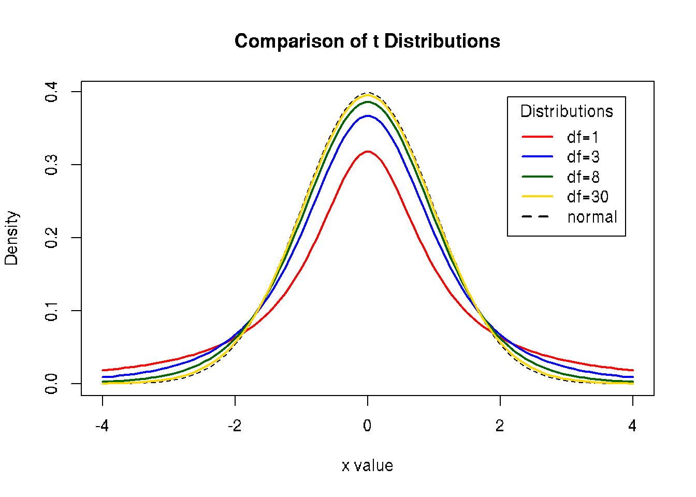

Chapter 7 t-Procedures
7.1 t-test and normal distribution
t-distribution assumes that the observations are independent and that they follow a normal distribution.
If the data are dependent, then p-values will likely be totally wrong (e.g., for positive correlation, too optimistic). Type II errors?
It is good to test if observations are normally distributed. Otherwise we assume that data is normally distributed.
Independence of observations is usually not testable, but can be reasonably assumed if the data collection process was random without replacement.
FIXME: I do not understand this. Deviation data from normalyty will lead to type-I errors. I data is deviated from normal distribution, use Wilcoxon test or permutation tests.
7.2 One-sample t-test
One-sample t-test is used to compare the mean of one sample to a known standard (or theoretical/hypothetical) mean (μ).
t-statistics:
\(t = \frac{m - \mu}{s/\sqrt{n}}\), where
m is the sample mean
n is the sample size
s is the sample standard deviation with n−1 degrees of freedom
μ is the theoretical value
Q: And what should I do with this t-statistics?
Q: What is the difference between t-test and ANOVA?
Q: What is the smallest sample size which can be tested by t-test?
Q: Show diagrams explaining why p-value of one-sided is smaller than two-sided tests.
7.3 Practical example: t-test in R
We want to test if N is different from given mean μ=0:
N = c(-0.01, 0.65, -0.17, 1.77, 0.76, -0.16, 0.88, 1.09, 0.96, 0.25)
t.test(N, mu = 0, alternative = "less")##
## One Sample t-test
##
## data: N
## t = 3.0483, df = 9, p-value = 0.9931
## alternative hypothesis: true mean is less than 0
## 95 percent confidence interval:
## -Inf 0.964019
## sample estimates:
## mean of x
## 0.602##
## One Sample t-test
##
## data: N
## t = 3.0483, df = 9, p-value = 0.01383
## alternative hypothesis: true mean is not equal to 0
## 95 percent confidence interval:
## 0.1552496 1.0487504
## sample estimates:
## mean of x
## 0.602##
## One Sample t-test
##
## data: N
## t = 3.0483, df = 9, p-value = 0.006916
## alternative hypothesis: true mean is greater than 0
## 95 percent confidence interval:
## 0.239981 Inf
## sample estimates:
## mean of x
## 0.602FIXME: why it accepts all alternatives at the same time (less and greater?)
7.4 Two samples t-test
Do two different samples have the same mean?
H0:
1. H0: m1 - m2 = 0
2. H0: m1 - m2 \(\leq\) 0
3. H0: m1 - m2 \(\geq\) 0
Ha:
1. Ha: m1 - m2 ≠ 0 (different)
2. Ha: m1 - m2 > 0 (greater)
3. Ha: m1 - m2 < 0 (less)
The paired sample t-test has four main assumptions:
- The dependent variable must be continuous (interval/ratio).
- The observations are independent of one another.
- The dependent variable should be approximately normally distributed.
- The dependent variable should not contain any outliers.
Continuous data can take on any value within a range (income, height, weight, etc.). The opposite of continuous data is discrete data, which can only take on a few values (Low, Medium, High, etc.). Occasionally, discrete data can be used to approximate a continuous scale, such as with Likert-type scales.
t-statistics: \(t=\frac{y - x}{SE}\), where y and x are the samples means. SE is the standard error for the difference. If H0 is correct, test statistic follows a t-distribution with n+m-2 degrees of freedom (n, m the number of observations in each sample).
To apply t-test samples must be tested if they have equal variance:
equal variance (homoscedastic). Type 3 means two samples, unequal variance (heteroscedastic).
7.5 Compare Student’s t and normal distributions
x <- seq(-4, 4, length=100)
hx <- dnorm(x)
degf <- c(1, 3, 8, 30)
colors <- c("red", "blue", "darkgreen", "gold", "black")
labels <- c("df=1", "df=3", "df=8", "df=30", "normal")
plot(x, hx, type="l", lty=2, xlab="x value",
ylab="Density", main="Comparison of t Distributions")
for (i in 1:4){
lines(x, dt(x,degf[i]), lwd=2, col=colors[i])
}
legend("topright", inset=.05, title="Distributions",
labels, lwd=2, lty=c(1, 1, 1, 1, 2), col=colors)
To generate data with known mean and sd:
### t-test
a = c(175, 168, 168, 190, 156, 181, 182, 175, 174, 179)
b = c(185, 169, 173, 173, 188, 186, 175, 174, 179, 180)
# test homogeneity of variances using Fisher’s F-test
var.test(a,b)##
## F test to compare two variances
##
## data: a and b
## F = 2.1028, num df = 9, denom df = 9, p-value = 0.2834
## alternative hypothesis: true ratio of variances is not equal to 1
## 95 percent confidence interval:
## 0.5223017 8.4657950
## sample estimates:
## ratio of variances
## 2.102784# variance is homogene (can use var.equal=T in t.test)
# t-test
t.test(a,b,
var.equal=TRUE, # variance is homogene (tested by var.test(a,b))
paired=FALSE) # samples are independent##
## Two Sample t-test
##
## data: a and b
## t = -0.94737, df = 18, p-value = 0.356
## alternative hypothesis: true difference in means is not equal to 0
## 95 percent confidence interval:
## -10.93994 4.13994
## sample estimates:
## mean of x mean of y
## 174.8 178.27.6 Non-parametric tests
7.7 Mann-Whitney U Rank Sum Test
- The dependent variable is ordinal or continuous.
- The data consist of a randomly selected sample of independent observations from two independent groups.
- The dependent variables for the two independent groups share a similar shape.
7.8 Wilcoxon test
The Wilcoxon is a non-parametric test which works on normal and non-normal data. However, we usually prefer not to use it if we can assume that the data is normally distributed. The non-parametric test comes with less statistical power, this is a price that one has to pay for more flexible assumptions.